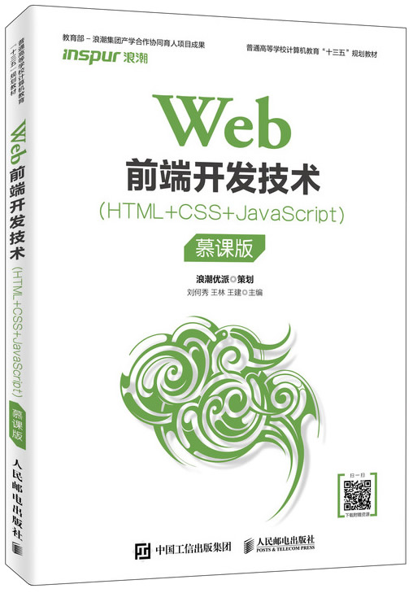

首页 > 书籍下载
《Web前端开发技术(HTML+CSS+JavaScript)（慕课版）》PDF下载（高清完整版）
|  | 作者：刘何秀、王林、王建 |
| 出版时间：2019年09月01日 | |
| 出版社： 人民邮电出版社 | |
| ISBN：9787115514004 | |
| 总页数：292 |
这是一本 Web前端开发基础类书籍，主要讲解了 HTML、CSS 和 Javascript 三大核心技术，是 Web 前端开发的入门级图书。
这里提供的是《Web前端开发技术(HTML+CSS+JavaScript)（慕课版）》的高清 PDF 下载，内容完整，附带目录标签。
这本书和其它同类书籍相对比，有以下几个特点：
- 丰富的案例，更具有实操性；
- 知识点非常全面，着重讲解重点和难点；
- 语言描述通俗、易懂；
- 丰富的配套资源，微视频授课做支撑；
- 把一个项目拆分成多个小案例，穿插到每个知识点中。
作为一个 Web 前端开发的从业人员，我认为，学好基础是行业的敲门砖，然后再从后期的项目实践和学习中不断地提升自己。如果你打算或刚刚了解 Web 前端开发知识，那这本书恰巧适合你！
书籍目录
- 第1章 Web客户端编程技术概述 1
- 1.1 Web概述
- 1.2 Web客户端概述
- 1.3 浏览器
- 1.4 Web客户端编程工具
- 1.5 本章小结
- 第2章 HTML基础知识
- 2.1 HTML综述
- 2.2 HTML文档编写规范
- 2.3 HTML常用标签
- 2.4 综合实例
- 2.5 本章小结
- 第3章 HTML表格和框架
- 3.1 HTML 表格元素
- 3.2 HTML框架
- 3.3 本章小结
- 第4章 HTML表单
- 4.1 表单概述
- 4.2 表单元素
- 4.3 表单控件
- 4.4 表单按钮
- 4.5 本章小结
- 第5章 CSS基础知识
- 5.1 CSS概述
- 5.2 CSS语法
- 5.3 CSS选择器
- 5.4 CSS创建
- 5.5 CSS特性
- 5.6 CSS常用属性
- 5.7 综合案例
- 5.8 本章小结
- 第6章 CSS样式高级应用
- 6.1 页面布局基本概念
- 6.2 CSS盒子模型
- 6.3 盒子模型属性
- 6.4 盒子之间的关系
- 6.5 DIV+CSS布局
- 6.6 CSS高级综合案例
- 6.7 本章小结
- 第7章 CSS3入门
- 7.1 CSS3概述
- 7.2 CSS3新增选择器
- 7.3 CSS3新增文本属性
- 7.4 CSS3新增颜色模式
- 7.5 CSS3新增边框属性
- 7.6 本章小结
- 第8章 JavaScript基础知识
- 8.1 JavaScript概述
- 8.2 JavaScript基本语法
- 8.3 语法规范
- 8.4 JavaScript常用API
- 8.5 本章小结
- 第9章 JavaScript事件处理
- 9.1 JavaScript事件概述
- 9.2 JavaScript常用事件
- 9.3 本章小结
- 第10章 DOM和BOM
- 10.1 DOM对象
- 10.2 BOM对象
- 10.3 本章小结
- 第11章 静态网页开发综合实例
- 11.1 项目的设计思路
- 11.2 主页的设计与实现
- 11.3 商品列表页面的设计与实现
- 11.4 商品详情页面的设计与实现
- 11.5 购物车页面的设计与实现
- 11.6 个人中心页面的设计与实现
- 11.7 登录和注册页面的设计与实现
- 11.8 本章小结
书籍下载
一键登录，免费下载完整版 PDF，文件名称：《Web前端开发技术(HTML+CSS+JavaScript)（慕课版）》.pdf